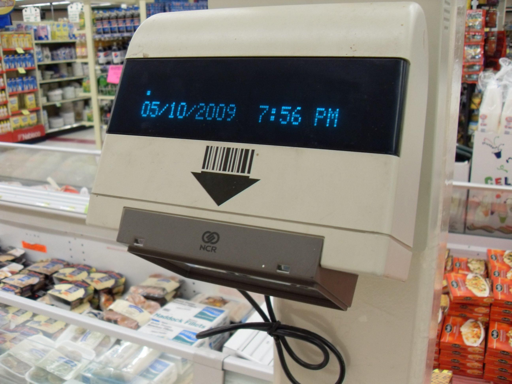

Supermarket Checkout Laser Scanner
The glass window you swipe groceries across — object-as-input over a fixed scanning surface, and the iconic beep of checkout

Overview
The fixed-position supermarket laser scanner replaced the act of typing prices with the act of swiping a physical item over a glass window. The first commercial deployment was the Spectra-Physics Model A installed at a Marsh supermarket in Troy, Ohio, on 26 June 1974, projecting a helium-neon laser beam up through a glass plate; the cashier passed each item's UPC label across the window and the machine decoded it with a beep. It made checkout a physical ritual — lift, swipe, beep, repeat — and turned the checkout counter itself into a sensing surface.
The interface has no keyboard, no buttons, no screen to read. The cashier becomes an alignment operator, offering each product to the window at the right orientation, and the machine's entire answer is a single tone. It is feedback reduced to one bit, standing in for an entire transaction's correctness, and it worked for a generation.
Deep dive
Before, the register was a keyboard the cashier typed into. The fixed scanner inverts that: the physical good IS the instruction. Decades before "scannable objects" became a design idea, every packaged product was a barcode-bearing input token offered to a fixed window.
The scanner's only feedback is a beep. A single sound carries the news that a thing was read correctly — an audio channel reduced to its absolute minimum, and one of the most recognized sounds in modern commerce.
The idea came from RCA's 1972 bullseye-code prototype, but the practical system was Spectra-Physics' laser reader for the UPC barcode. After the 1974 Troy, Ohio install, scanners spread through the late 1970s and 1980s, with IBM, NCR, and Symbol building the fixed and handheld units that became ubiquitous.
Team & pioneers
- Spectra-Physics. Built the first commercial laser UPC checkout scanner (Model A).
- IBM / NCR / Symbol Technologies. Built the fixed and handheld scanners that made checkout scanning ubiquitous through the 1980s.